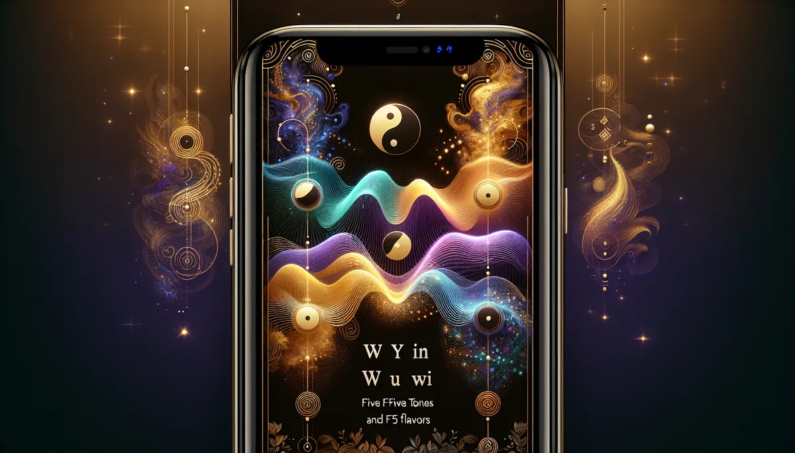

《黃帝內經·靈樞》將五音（角徵宮商羽）與五臟（肝心脾肺腎）對應。透過體質評估，找出您的五行臟腑傾向和養生方向。
📜 源頭脈絡
五音五味出自《黃帝內經·靈樞》，是中醫裡用聲音和味覺來判斷體質、調理臟腑的系統。角徵宮商羽對應木火土金水，酸苦甘辛鹹對應肝心脾肺腎。這不是玄學，是古人在沒有血壓計和血液檢查的年代，用感官做體質辨識的方法。
《靈樞》的25種人
《靈樞·陰陽二十五人篇》把人分成25種體質類型：五種主類型（木火土金水），每種再細分五個亞型（木中之木、木中之火、木中之土……）。分類的依據不是生日，而是體型、膚色、聲音、性格和味覺偏好的綜合觀察。比如「木形之人」：身材修長、面色偏青、聲音偏高亢、性格急躁、偏愛酸味。這個描述在兩千多年前就被寫下來了。
五音的對應：角音（Mi音，約329Hz）對應木/肝，徵音（Sol音，約392Hz）對應火/心，宮音（Do音，約262Hz）對應土/脾，商音（Re音，約294Hz）對應金/肺，羽音（La音，約440Hz）對應水/腎。中國傳統音樂用五聲音階（宮商角徵羽），就是這五個音。
從宮廷樂師到現代音樂治療
中國古代宮廷設有「太樂令」，負責用音樂調節朝廷氣氛。《禮記·樂記》記載：「宮為君，商為臣，角為民，徵為事，羽為物。」五音不只是音階排列，而是一套社會秩序的聲學隱喻。
現代音樂治療（Music Therapy）從1950年代開始在美國發展為正式的臨床學科。美國音樂治療協會（AMTA）認證的音樂治療師目前超過9,000人。他們使用的理論框架和五音五味完全不同（主要基於神經科學和行為心理學），但在「特定聲波能影響自律神經系統」這個基本觀察上，古今中外的共識越來越多。
2017年《Frontiers in Psychology》發表了一篇統合分析，整理了30項關於音樂對皮質醇（壓力荷爾蒙）影響的研究，結論是：聆聽放鬆音樂確實能顯著降低唾液皮質醇濃度。雖然這些研究沒有專門測試「角徵宮商羽」五聲音階的效果，但它們支持了「聲音影響生理」的基本前提。
五音五味的核心假設是：特定音調的聲波和特定的臟腑之間存在共振關係。這個假設在現代物理學和生理學中的支持度很低。人體臟腑不是音叉，不會因為外部聲波「匹配」就產生共振。
但聲音確實影響人體的另一條路徑是經由自律神經系統。低頻聲音（如藏鉢的嗡嗡聲）會刺激迷走神經，促進副交感神經活動，降低心率和血壓。這和「羽音（低沉）入腎，腎主水，水性沉靜」的描述在體感層面上是吻合的。
老實說：五音五味作為體質辨識工具，它的觀察（聲音高低、味覺偏好、體型特徵）和現代體質醫學（如中醫體質九分法）有重疊。但作為治療工具（「聽角音治肝病」），它的效果缺乏臨床證據。目前最安全的用法是：把它當成一種覺察工具，幫助您注意到自己對哪些聲音和味道有本能的傾向，而不是把它當處方箋。
五音是耳朵的事，五味是舌頭的事，精油是鼻子的事。三條感官通道，通往同一個身體。
角音偏盛（肝木旺）的人，脾氣來的時候連自己都嚇到。佛手柑的柑橘甜酸像一把梳子，不是壓住火氣，是把糾結的肝氣一根一根理開。配一杯酸梅湯，酸入肝，讓肝有事做就不鬧脾氣了。
宮音不足（脾土虛）的人，什麼都吃不香，做什麼都提不起勁。甜橙精油的暖甜像媽媽廚房飄出來的滷肉香，不是治病，是讓胃想起來「吃飯是一件開心的事」。配一碗四神湯，甘入脾，把胃口找回來。
羽音偏寒（腎水冷）的人，冬天手腳冰到懷疑自己是不是冷血動物。肉桂精油的辛辣暖意像泡腳水從腳底往上蒸，不是暖全身，是先把腎陽的小火苗點起來。配一碗黑豆排骨湯，鹹入腎，補的不是營養，是溫度。
✦ 耳朵聽、舌頭嚐、鼻子聞。三條路走進同一座城堡。您用哪條路都可以，精油只是其中一扇門。
1. 情緒傾向
2. 身體容易出現
3. 口味偏好
4. 聲音特質